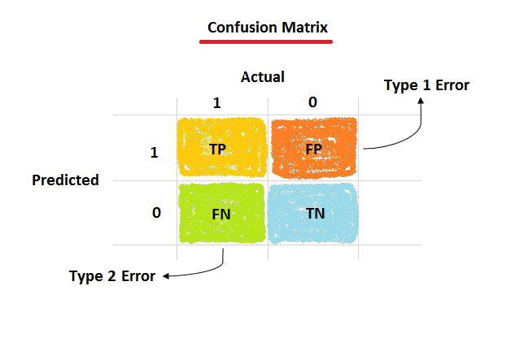
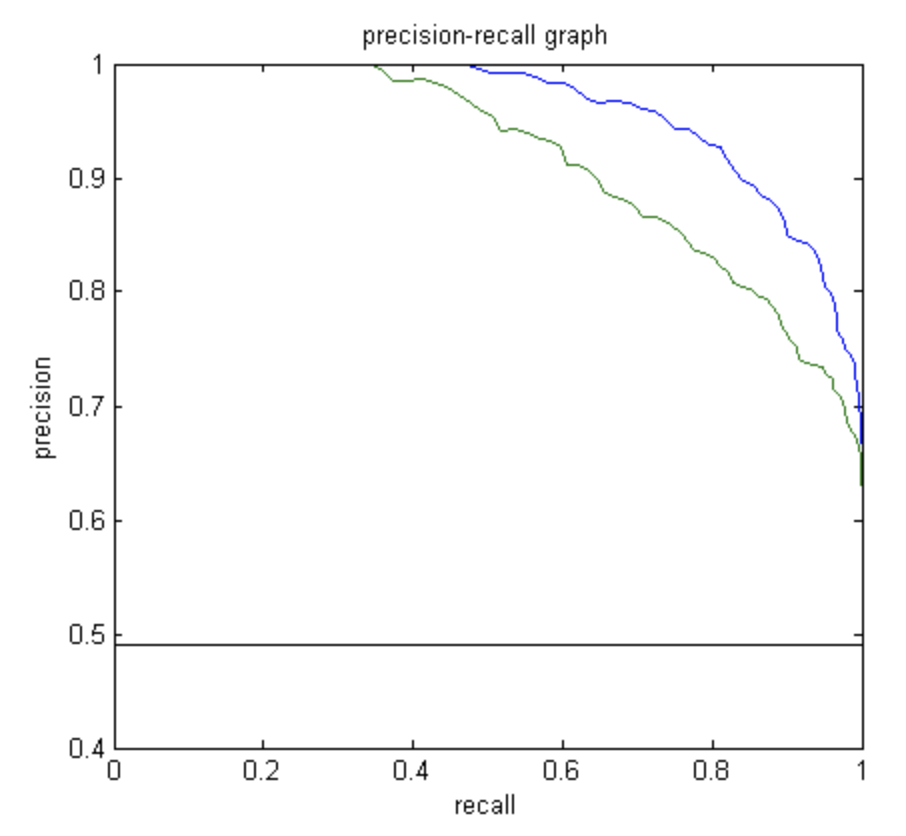
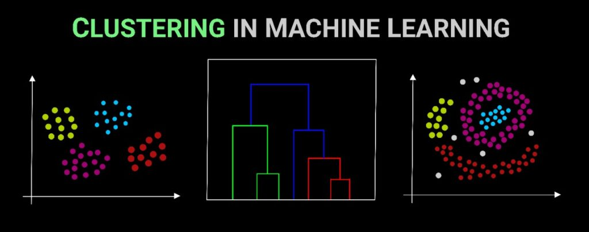

Evaluation before Prediction
Evaluating the machine learning models is an essential part of any project. It is not suggested to predict values on unseen data without any performance evaluation. And sometimes, the models may provide satisfying results when evaluate using a metric like accuracy score but could possibly give poor results by logarithmic loss or some other metrics. Then, it is important to know what the basic evaluation metrics are, how they work and when to used them. And there is no one single metric which is appropriate for all the models evaluation. The choice of metric mainly depends on the type of model and the implementation plan of the model.
The following metrics would be included in this post by the type of the problems:
- Classification problems
- Confusion matrix
- Accuracy
- Precision
- Recall
- F1 score
- Receiver operating characteristic $($ROC$)$ curve
- Precision-Recall curve
- Logarithmic loss
- Confusion matrix
- Regression problems
- Mean Absolute Error $($MAE$)$
- Mean Squared Error $($MSE$)$
- Root Mean Squared Error $($RMSE$)$
- The coefficient of determination $($R-squared$)$, Adjusted R-squared
- Explained variance
- Clustering problems
- Rand index
- Mutual Information
- Silhouette coefficient
- Dunn’s index
Classification problems
Classification in machine learning refers to a predictive modeling problem in which a class label is predicted for a given example of input data, which belongs to the supervised problem.
![Classification [source:datamahadev.com]](classification-feature.jpg)
Confusion matrix
The confusion matrix is a situation analysis table that summarizes the prediction results of the classification model in data science, data analysis, and machine learning. The records in the data set are summarized in the form of a matrix according to the two criteria of the real category and the classification judgment made by the classification model.

- True Positive $($TP$)$：outcomes where the model correctly predicts the positive class.
- False Positive $($FP$)$：outcomes where the model incorrectly predicts the positive class.
- False Negative $($FN$)$：outcomes where the model incorrectly predicts the negative class
- True Negative $($TN$)$：outcomes where the model correctly predicts the negative class.
How to memorize these four terms? The first part of True/False indicates whether the prediction is correct or not, and the second part of Positive/Negative shows the prediction results. Based on Confusion matrix, there are several metrics which could show the performance of the classifier.
Accuracy
Accuracy indicates that how often the classifier is correct overall, while the mis-classification rate is how often the classifier is wrong:
$$Accuracy = \frac{TP+TN}{Total},$$
$$Misclassification\ rate = \frac{FP+FN}{Total},$$
where (Total) = (TP+TN+FP+FN) is all the outcomes from classification.
Precision
Precision is easily confused with accuracy. In fact, the precision is only for positive samples with correct predictions rather than all samples with correct predictions. The outcome is to show how many of the positive is really positive:
$$Precision = \frac{TP}{TP+FP}, $$
that is, the number of correctly predicted positive cases divided by the total number of predicted positive cases.
Recall
Recall is the proportion of actual positive cases which are correctly identified. And it is calculated as the ratio of the correct positive prediction to the total number of positive cases:
$$Recall = \frac{TP}{TP+FN}, $$
that is, how many of all actual positive values are predicted to be positive.
F1 score
The F1 score is the harmonic average of the precision value and the recall value, which is closer to the smaller one, so when the precision rate and the recall rate are close, the F value is the largest. Many evaluation metrics of recommendation systems are based on F1 scores:
$$F1 \thinspace score = \frac{2}{\frac{1}{precision}+\frac{1}{recall}}. $$
However, why the F1 score is needed in the machine learning evaluation. Because F1 score is usually more useful than accuracy, especially if the class distribution is uneven for different groups. Let’s check one toy sample: TP = 5, TN = 100, FP = 5, FN = 10, where the proportion of positive/negative cases is unbalanced; Then the (Accuracy) = (\frac{105}{120}) = (\frac{7}{8}), (Precision) = (\frac{5}{10}) = (\frac{1}{2}), (Recall) = (\frac{5}{15}) = (\frac{1}{3}). As displayed, the accuracy is high but would not be the ideal metric for this unbalanced data set and modeling because of low precision and recall by poor data distribution. F1 score for this sample is (\frac{2}{\frac{1}{precision}+\frac{1}{recall}}) = (\frac{2}{2+3}) = (\frac{2}{5}), which takes the both (Precision) and (Recall) into account.
ROC curve
The receiver operating curve $($ROC curve$)$ is a graphical plot that illustrates the diagnostic ability of a binary classifier system as its discrimination threshold is varied, with the False positive rate on the x-axis and True positive rate on the y-axis:
$$False \thinspace positive \thinspace rate (FPR) = \frac{FP}{FP+TN}, $$
$$True \thinspace positive \thinspace rate (TPR, Recall) = \frac{TP}{TP+FN}, $$
The area below the ROC curve is called the area under curve $($AUC$)$, and the larger AUC, the better performance of the classifier. The AUROC score could also be improved by changing (FPR) and (TPR) in soft classifier, such as Logistic regression, which in turn could be changed by setting different threshold value. For the threshold, if probability of classification label as 1 >= threshold, class = 1; else, probability < threshold, class = 0.
PR curve
A Precision-Recall curve $($PR curve$)$ is a graph with (Precision) values on the y-axis and (Recall) values on the x-axis. It is expected that the machine learning models have both high precision and high recall. However, most machine learning methods often involve a trade-off between these two metrics. A better PR curve has greater AUC. For example, in the figure below, the classifier with the blue line has better performance than the classifier with the green line.
Then, why is the PR curve useful when the ROC curve exists? Both curves have (Recall) in the curve space, however, the PR curve gives a more informative picture of an algorithm’s performance when the data sets are highly skewed. And the algorithms that optimize AUROC are not guaranteed to optimize AUC of PR curve. Details could be found here.
Logarithmic loss
Logarithmic loss $($Log-loss$)$ indicates how close the prediction probability is to the corresponding (\frac{actual}{true}) value. The less the predicted probability diverges from the actual value, the lower is the Log-loss value:
$$(Log-loss_i) = -[y_i ln(p_i) + (1-y_i) ln(1-p_i)], $$
Clustering problems
Clustering problem involves automatically discovering natural grouping in data. Unlike supervised learning $($like classification$)$, clustering algorithms only interpret the input data and find natural groups or clusters in feature space.
Rand index
The Rand index/measure $($RI$)$ in data clustering is a measurement of the similarity between two data clusterings. From a mathematical aspect, the (RI) is related to the accuracy in the confusion matrix:
$$RI = \frac{TP+TN}{TP+TN+FP+FN},$$
here (TP) is how many similar observations are correctly clustered in the same clustering and TN is how many varied observations are correctly separated in the different clusterings. And the denominator is the combinations of all observation pairs, which is (C{}^2_{N}). But RI is also possible to be applied when class labels are not used. A form of the Rand index may be defined that is adjusted for the chance grouping of elements, this is the adjusted Rand index.
Mutual Information
The Mutual Information $($MI$)$ is the mutual dependence measurement between two random variables, which quantifies the “amount of information” obtained about one random variable by observing the other variable.
Dunn index
The Dunn Index, an internal evaluation scheme, is the ratio of the lowest inter-cluster distance $($the distance between centroids$)$ to the highest intra-cluster distance $($the distance between data points inside the same cluster$)$, which is better if higher:
$$ DI = \mathop{min}\limits_{1\leq i\leq k} {(\mathop{min}\limits_{j \neq k}(\frac{d_{min}(C_i, C_j)}{\mathop{max}\limits_{1\leq i\leq k}d_{in}(C_l)}))} $$
Regression problems
Regression problem is to estimate the relationships between a dependent variable and one or more independent variables. So it is very different from classification which involves predicting a class label and the error metrics are designed to evaluate the performance of regression models.
![Classification vs. Regression [source:JavaTpoint]](regression-diff.jpg)
Mean Squared Error
The Mean Squared Error $($MSE$)$, also called as L2-norm loss, is the average of the squared difference between the actual and predicted values in the data set, which measures the (variance) of the residuals:
$$MSE = \frac{1}{N} \sum_{i=1}^{N} (y_i - \hat{y_i})^2$$
Actually, it is summarized from the training process of the regression problem. For example, in the linear regression, according to the training data set, the goal is to minimize (\sum_{i=1}^{N} {(y{}^i_{train} - \hat{y}{}^i_{train})}^2). The effect of the observations number (N) is to eliminate the population influence.
Root Mean Squared Error
The Root Mean Squared Error $($RMSE$)$ is the square root of the Mean Squared error which measures the (standard) (deviation) of residuals:
$$RMSE = \sqrt{MSE} = \sqrt{\frac{1}{N} \sum_{i=1}^{N} (y_i - \hat{y_i})^2}$$
Same as before, although the (MSE) has already taken the population effect into account, the (MSE) would be sensitive to the squared form of the residuals, which is not proportional to the same base unit. And (RMSE) is introduced to solve this problem.
Mean Absolute Error
The Mean Absolute Error $($MAE$)$, also called as L1-norm loss, represents the mean of the absolute difference between the actual values (y_i) and predicted values (\hat{y_i}) or absolute “residual” values in the data set, which measures the (average) of the residuals:
$$MAE = \frac{1}{N} \sum_{i=1}^{N} \lvert{y_i - \hat{y_i}}\rvert$$
The motivation of (MAE) is that (MSE) or (RMSE) always enlarges the residuals and is sensitive to the outliers. Although the (MAE) has the same base unit as (RMSE), the MAE reports the real difference between prediction and actual values and more robust to the outliers.
The coefficient of determination
The common problem of the above error-related metrics is that there is no upper and lower limit bounds. For example, when we use AUROC, the upper limit is 1. The closer to 1 represents the better the model and the model with AUC near 0.5 represents almost the same performance as random guessing. The coefficient of determination $($R-squared$)$ is a scale-free score which represents the proportion of the variance for a dependent variable explained by an independent variable or variables in a regression model:
$$R^2 = 1 - \frac{SS_{residual}}{SS_{total}} = 1 - \frac{\sum_{i=1}^{N} (y_i - \hat{y_i})^2}{\sum_{i=1}^{N} (y_i - \overline{y})^2} = 1 - \frac{MSE(y,\hat{y})}{Var(y)}$$
\[
\begin{cases}
SS_{residual}: residual\ sum\ of\ square, built\ model\ “errors” \\\\
SS_{total}: total\ sum\ of\ square, baseline\ “errors”
\end{cases}
\]
In the best case, the predicted values exactly match with the observations, which results in $SS_{residual}$ = 0 and (R^2) = 1. A baseline model, which always predicts as (\overline{y}), will have (R^2) = 0. Models that have worse predictions than this baseline will have a negative (R^2). And in investing, the R-squared could also be interpreted as the percentage of a fund or security’s movements that can be explained by movements in a benchmark index. Details could be found here.
However, there is one obvious drawback of original (R^2) coefficients. The (R^2) coefficients would be applied when the predictors are calculated by ordinary least-squares regression. In this case, (R^2) increases as the number of variables in the model is increased, because if the new variable doesn’t have any good contribution to the accuracy, its weight would be set as 0. The only thing needed to increase the (R^2) is to add more variables.
Adjusted R squared is a modified version of R-squared coefficient, which is adjusted for the number of independent variables in the model and penalizes the statistic as extra variables are included in the predictor. And it is always less than or equal to R-squared coefficient:
$$Adjusted\ {R^2}= 1 - \frac{(1-R^2)(N-1)}{N-k-1},$$
where N is the number of observations and k is the number of the independent variables explained the data.
Conclusion
Several machine learning metrics have been introduced above, and appropriate measurements need to be selected according to specific issues in practical applications. In the Python’s scikit-learn package, these metrics are very convenient to use. There are more useful metrics in the field, which would be introduced in detailed in the future post.